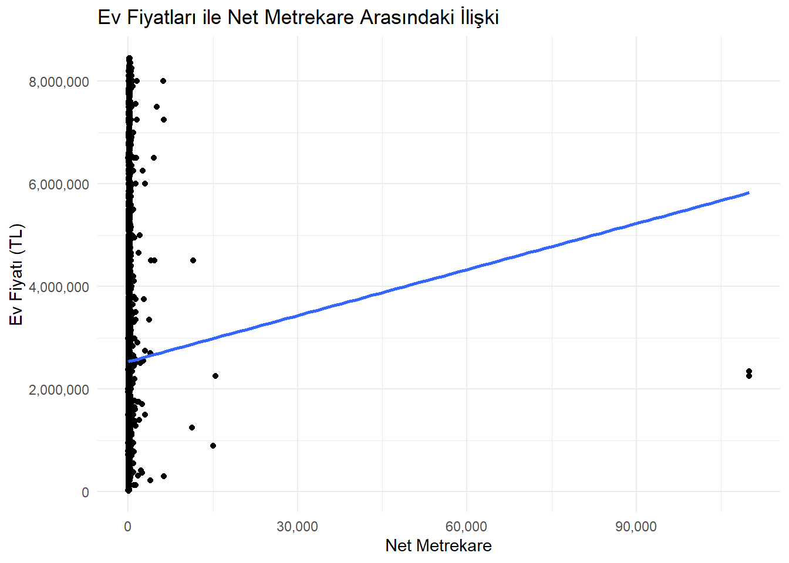
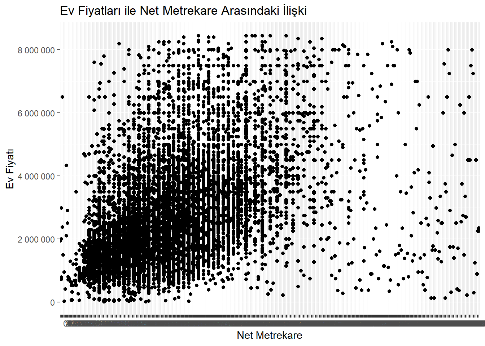
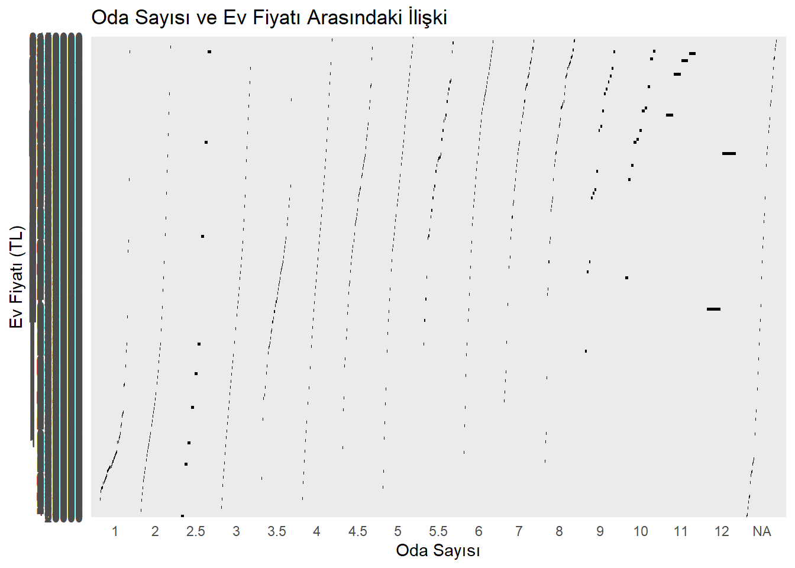
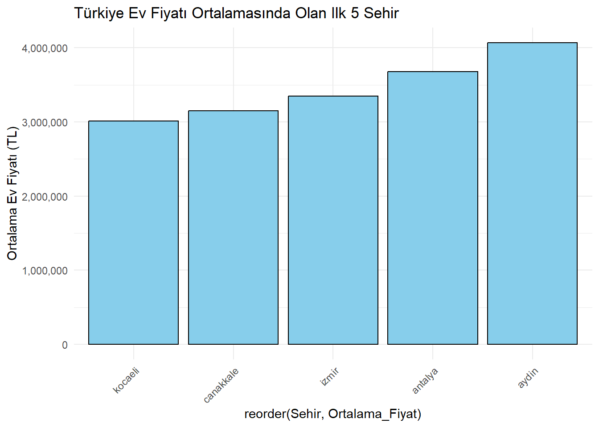
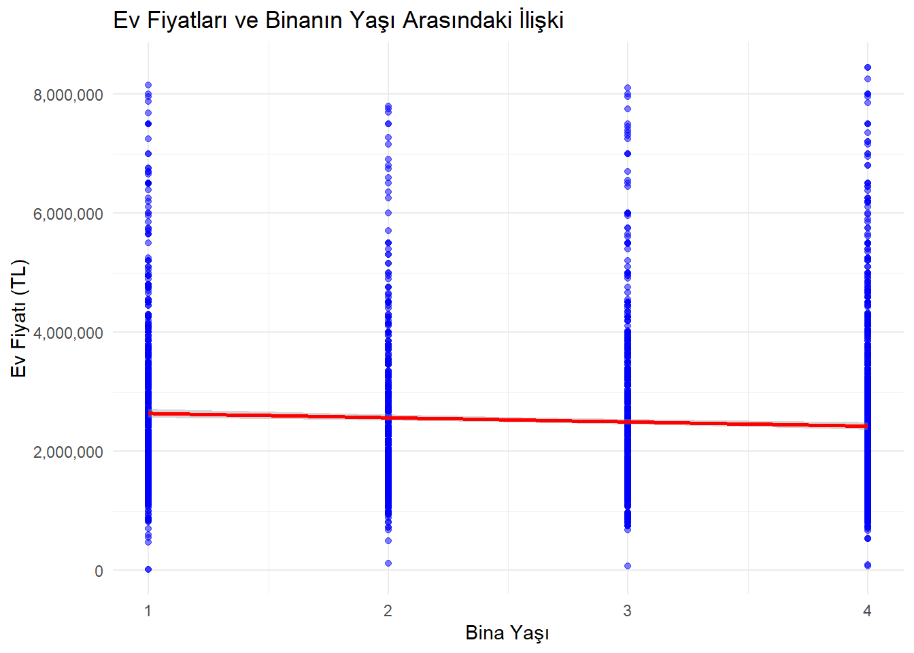

Bu proje, Türkiye’nin ev fiyatlarıyla ilgili veriler üzerinde yapılan analizleri içermektedir. Veri seti, [Ev Fiyatları - 2024 ]https://www.kaggle.com web sayfasından alınmıştır ve 2004-2024 yılları arasındaki ev fiyatlarını içermektedir.
📊 Keşifsel Veri Analizi (EDA)
Veri Okuma ve İlk İnceleme
library(readxl)library(dplyr)
Attaching package: 'dplyr'
The following objects are masked from 'package:stats':
filter, lag
The following objects are masked from 'package:base':
intersect, setdiff, setequal, union
library(ggplot2)library(scales) # Sayı formatlamayı sağlamak için# Veri setini okumaveri <-read_excel("data/home_price_converted.xlsx")# NA değerlerini medyan ile dolduralım (Net_Metrekare ve Fiyat sütunları)veri_cleaned <- veri %>%mutate(Fiyat =ifelse(is.na(Fiyat), median(Fiyat, na.rm =TRUE), Fiyat),Net_Metrekare =ifelse(is.na(Net_Metrekare), median(Net_Metrekare, na.rm =TRUE), Net_Metrekare) )# Ev fiyatlarındaki aykırı değerleri kaldırmaveri_cleaned <- veri_cleaned %>%filter(Fiyat <quantile(Fiyat, 0.95))# Ev fiyatları ile net metrekare arasındaki ilişkiggplot(veri_cleaned, aes(x = Net_Metrekare, y = Fiyat)) +geom_point() +geom_smooth(method ="lm", se =FALSE) +scale_y_continuous(labels = scales::comma_format()) +# Ev fiyatını düzgün formatla (binlerce ayraçlı)scale_x_continuous(labels = scales::comma_format()) +# Metrekareyi de düzgün formatlalabs(title ="Ev Fiyatları ile Net Metrekare Arasındaki İlişki",x ="Net Metrekare",y ="Ev Fiyatı (TL)" ) +theme_minimal() # Temiz tema
`geom_smooth()` using formula = 'y ~ x'

# Ev fiyatlarının bilimsel notasyon yerine normal sayılarla gösterilmesiveri_cleaned$Fiyat <-format(veri_cleaned$Fiyat, scientific =FALSE)# Net metrekareyi de düzenleyelimveri_cleaned$Net_Metrekare <-format(veri_cleaned$Net_Metrekare, scientific =FALSE)# Ev fiyatları ile net metrekare arasındaki ilişkiyi çizmeggplot(veri_cleaned, aes(x = Net_Metrekare, y =as.numeric(Fiyat))) +# Fiyatı sayıya çeviriyoruzgeom_point() +geom_smooth(method ="lm", se =FALSE) +labs(title ="Ev Fiyatları ile Net Metrekare Arasındaki İlişki", x ="Net Metrekare", y ="Ev Fiyatı") +scale_y_continuous(labels =label_number(scale =1, suffix ="")) # Binlik ayırıcı ekler
`geom_smooth()` using formula = 'y ~ x'

Grafikleri yorumlarken, birkaç önemli faktöre dikkat etmeniz gerekir. Ev fiyatları ile net metrekare arasındaki ilişkiyi gösteren grafik, görsel bir analiz yapmanızı sağlar. İşte grafiği yorumlamak için kullanabileceğiniz bazı adımlar ve öneriler:
1. Veri Dağılımını İnceleme
Dağılımın şekli: Eğer grafikteki veriler bir düz çizgi etrafında kümeleniyorsa, bu genellikle bir doğrusal ilişkiyi işaret eder. Yani, net metrekare arttıkça ev fiyatları da artar. Örneğin, net metrekare ile ev fiyatları arasında pozitif bir ilişki olabilir.
Eğilim hattı: Grafik üzerinde çizilen doğrusal eğilim (trend) hattı, ev fiyatlarının metrekareye göre nasıl değiştiğini gösterir. Eğer eğilim yükseliyorsa, bu net metrekare arttıkça ev fiyatlarının da arttığını gösterir.
2. Aykırı Değerlerin Belirlenmesi
Aykırı değerler: Eğer grafikte belirli noktalar diğerlerinden çok uzaksa, bu aykırı değerler olarak kabul edilebilir. Örneğin, metrekareyi arttıran ancak fiyatı çok düşük olan evler ya da çok yüksek fiyatlı evler, veri setinde olağandışı noktalar olabilir.
Aykırı değerlerin etkisi: Aykırı değerlerin, veri analizi sonuçlarını yanıltabileceğini unutmayın. Bu tür veriler, ortalama veya regresyon analizinin sonuçlarını etkileyebilir.
3. Ev Fiyatlarındaki Değişim
**Ev fiyatlarının genel artışı**: Grafik üzerinde, net metrekare ile fiyat arasındaki ilişkiyi gözlemleyin. Eğer fiyatlar genellikle metrekare arttıkça artıyorsa, bu piyasada daha büyük evlerin daha yüksek fiyatlara satıldığını gösterir.
**Metrekare ile fiyat arasındaki hız**: Eğer fiyatlar net metrekareye orantılı olarak artıyorsa, bu durum, metrekare arttıkça evin değerinin belirgin şekilde yükseldiğini gösterir. Fakat, bazı durumlarda fiyat artışı daha düz olabilir.
6. Grafikteki Zorluklar veya Dengesizlikler
Veri kümelerinin yoğunluğu: Eğer grafikte belli bir bölge (örneğin, düşük metrekareli ve düşük fiyatlı evler) yoğun bir şekilde kümelenmişse, bu evlerin piyasada daha yaygın olduğunu gösterebilir. Aynı şekilde, bazı metrekare aralıklarında fiyatlar çok yüksek olabilir.
Dağılımda simetri veya asimetri: Eğer grafik sağa veya sola doğru eğilim gösteriyorsa, bu, fiyatların veya metrekarelerin asimetrik olduğunu gösterebilir. Bu durum daha yüksek veya düşük metrekarelerin piyasada daha yaygın olduğunu gösterebilir.
Yorum:
“Grafikte, ev fiyatlarının net metrekare ile genellikle arttığı gözlemlenmektedir. Bu, daha büyük evlerin daha pahalı olduğu genel kuralına uygun bir durumdur. Ancak, bazı aykırı değerler (örneğin, çok büyük metrekarelere sahip ancak düşük fiyatlı evler) verinin doğrusal ilişkisini bozuyor. Buna göre, ev fiyatları ile metrekare arasındaki ilişki, genellikle doğrusal bir artış gösteriyor, ancak diğer faktörlerin de etkili olabileceği düşünülmektedir.”
Ek İncelemler
Korelasyon Analizi
Ev fiyatları ile diğer değişkenler arasındaki korelasyon: Net metrekare dışında, diğer faktörlerin (örneğin, oda sayısı, banyo sayısı, binanın yaşı) ev fiyatları ile ilişkisini inceleyebilirsiniz. Korelasyon analizi yaparak bu değişkenlerin birbirleriyle olan ilişkisini ve ev fiyatlarına ne kadar etki ettiğini görebilirsiniz.
options(warn =-1)# Oda Sayısı ve Fiyat sütunlarındaki NA değerlerini ortalama ile dolduralımveri_cleaned$Oda_Says <-as.numeric(veri_cleaned$Oda_Sayisi) # Sayısal formata dönüştürveri_cleaned$Fiyat <-as.numeric(veri_cleaned$Fiyat) # Fiyatı sayısal yapalım# Hatalı NA değerlerini medyan ile dolduralımveri_cleaned$Oda_Says[is.na(veri_cleaned$Oda_Sayisi)] <-median(veri_cleaned$Oda_Says, na.rm =TRUE)veri_cleaned$Fiyat[is.na(veri_cleaned$Fiyat)] <-median(veri_cleaned$Fiyat, na.rm =TRUE)# Oda Sayısına göre ortalama ev fiyatlarını hesaplayalımveri_ortalama <- veri_cleaned %>%group_by(Oda_Sayisi) %>%summarise(Ortalama_Fiyat =mean(Fiyat, na.rm =TRUE))# Çizgi grafiği tekrar çizelimggplot(veri_ortalama, aes(x =factor(Oda_Sayisi), y = Ortalama_Fiyat)) +geom_line(color ="blue", size =1) +# Çizgigeom_point(color ="red", size =2) +# Noktalarlabs(title ="Oda Sayısı ve Ortalama Ev Fiyatı Arasındaki İlişki",x ="Oda Sayısı",y ="Ortalama Ev Fiyatı (TL)" ) +theme_minimal()
`geom_line()`: Each group consists of only one observation.
ℹ Do you need to adjust the group aesthetic?

Oda Sayısı ve Ev Fiyatı Veri Görselleştirme Amacı:
Ev fiyatları ve oda sayısı arasındaki ilişkiyi görselleştirirken, temel amacımız, oda sayısının ev fiyatları üzerindeki etkisini görmek. Oda sayısının, genellikle daha büyük evler ve daha yüksek fiyatlarla ilişkili olduğu tahmin edilebilir, ancak verinin gerçek dağılımını inceleyerek bu ilişkiyi doğrulamak.
2. Görsel İpuçları:
Yıllar içinde oda sayısı arttıkça ev fiyatlarının da artıp artmadığına dair bir trend gözlemi yapmayı amaçlıyoruz. Fakat şunu unutmamak gerekir:
Eğilimlerin belirlenmesi: Genellikle oda sayısı arttıkça evin fiyatı da artar, ancak oda başına fiyat farklılıkları şehirden şehire veya binanın yaşı, lokasyonu gibi diğer faktörlere göre değişkenlik gösterebilir.
Aykırı değerler: Grafik üzerinde bazı noktalar eğilime uymuyor olabilir (örneğin çok yüksek fiyatlar). Bu tür aykırı değerler, örneğin, büyük villalar veya prestijli bölgelerdeki evler olabilir. Bu tür aykırı değerler modelin yorumlanmasında yanıltıcı olabilir, bu nedenle bunları analizde ayrı tutmak gerekebilir.
3. Grafikteki İletişim:
Görselleştirme, sayısal verinin daha anlamlı bir şekilde yorumlanmasına olanak sağlar. Ancak, burada birkaç önemli unsur şunlardır:
Oda Sayısı: Oda sayısının artması, genellikle evin büyüklüğünü ve daha fazla yaşam alanı sunduğunu gösterir, ancak bu her zaman fiyat artışı anlamına gelmez. Bazı durumlarda, evin yaşına veya lokasyonuna bağlı olarak fiyat artışları daha düşük olabilir.
Fiyatlar: Yüksek fiyatlı evlerin genellikle daha fazla oda sayısına sahip olacağı beklenir, ancak bu her zaman doğrusal bir ilişki olmayabilir. Örneğin, bir odalı modern, şık bir daire büyük ve eski bir evden daha yüksek fiyatla satılabilir.
4. Trend Çizgisi (İstatistiksel Doğrulama):
Eğilim çizgisi eklenmiş olması, oda sayısı ile ev fiyatları arasındaki ilişkiyi daha net gösterir. Bu çizgi, genellikle oda sayısı arttıkça ev fiyatlarının da arttığını gösterecek. Ancak, belirli bir noktadan sonra, oda sayısının ev fiyatlarına olan etkisinin zayıfladığını gözlemleyebilirsiniz. Yani, 5 odalı bir ev ile 10 odalı bir ev arasındaki fiyat farkı, 2 odalı bir ev ile 5 odalı bir ev arasındaki farktan çok daha büyük olabilir.
5. Yorum ve Sonuçlar:
Grafik üzerinden yapılan değerlendirmede, oda sayısının ev fiyatlarını etkileyen önemli bir faktör olduğunu söyleyebiliriz, ancak bunun yanı sıra lokasyon, binanın yaşı, kat sayısı gibi diğer değişkenlerin de önemli rol oynadığını göz önünde bulundurmalıyız. Grafikten, oda sayısı arttıkça fiyatların arttığını ama bu ilişkinin düz bir çizgi şeklinde değil, bazı noktalar için daha karmaşık olduğunu gözlemleyebiliriz.
# Ortalama ev fiyatını şehir bazında hesaplayalımveri_sehir <- veri_cleaned %>%group_by(Sehir) %>%# Burada doğru kolon ismini kullanıyoruzsummarise(Ortalama_Fiyat =mean(Fiyat, na.rm =TRUE)) %>%arrange(desc(Ortalama_Fiyat)) # Fiyatı azalan sıraya göre sıralayalım# En yüksek 5 şehri seçelimveri_sehir_top5 <-head(veri_sehir, 5)# Fiyatları tam sayıya çeviriyoruzveri_sehir_top5$Ortalama_Fiyat <-round(veri_sehir_top5$Ortalama_Fiyat)# Grafikggplot(veri_sehir_top5, aes(x =reorder(Sehir, Ortalama_Fiyat), y = Ortalama_Fiyat)) +geom_bar(stat ="identity", fill ="skyblue", color ="black") +labs(title ="Türkiye Ev Fiyatı Ortalamasında Olan Ilk 5 Sehir",y ="Ortalama Ev Fiyatı (TL)" ) +theme_minimal() +theme(axis.text.x =element_text(angle =45, hjust =1)) +# X ekseni etiketlerini döndürdükscale_y_continuous(labels = scales::comma) # Fiyatları virgüllü formatta göster

# Binanın yaşını sayısal verilere dönüştürme (Eğer kategorikse)veri_cleaned$Binanin_Yasi <-as.numeric(veri_cleaned$Binanin_Yasi)# Ev fiyatları ile binanın yaşı arasındaki ilişkiyi inceleyelimggplot(veri_cleaned, aes(x = Binanin_Yasi, y = Fiyat)) +geom_point(color ="blue", alpha =0.5) +# Dağılım noktalarını çizgeom_smooth(method ="lm", color ="red") +# Eğri çizelimlabs(title ="Ev Fiyatları ve Binanın Yaşı Arasındaki İlişki",x ="Bina Yaşı",y ="Ev Fiyatı (TL)" ) +theme_minimal() +scale_y_continuous(labels = scales::comma) # Fiyatları virgüllü formatta göster
`geom_smooth()` using formula = 'y ~ x'

Açıklamalar:
geom_point(): Ev fiyatları ve binanın yaşı arasındaki ilişkiyi göstermek için dağılım grafiği çiziyoruz.
geom_smooth(): Verilere en uygun doğrusal eğriyi ekliyoruz. Bu, ev fiyatlarının binanın yaşına göre nasıl değiştiğini gösteriyor.
scale_y_continuous(labels = scales::comma): Y ekseninde fiyatları virgüllü olarak gösteriyoruz (örneğin 1,000,000 TL şeklinde).
Sonuç:
Bu grafikte, binanın yaşı arttıkça ev fiyatlarının nasıl değiştiğini gözlemleyebilirsiniz. Genellikle, eski binaların fiyatları daha düşük olma eğilimindedir, ancak bazı özel durumlar olabilir. Bu grafiği değerlendirerek, ev fiyatlarının binanın yaşı ile nasıl ilişkilendiğine dair bir fikir edinebilirsiniz.
Grafikte dikkat edilmesi gereken noktalar:
Dağılım: Veriler hangi bölgelerde yoğunlaşıyor? Fiyatlar nasıl dağılmış?
Eğri: Eğri, verilerin genel trendini gösteriyor mu? Fiyatlar ile yaş arasında belirgin bir ilişki var mı?
Bu grafik, ev fiyatları ve binanın yaşı arasındaki ilişkiyi görsel olarak anlamanızı sağlar.